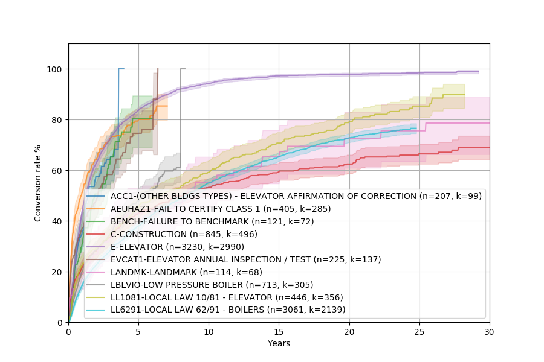
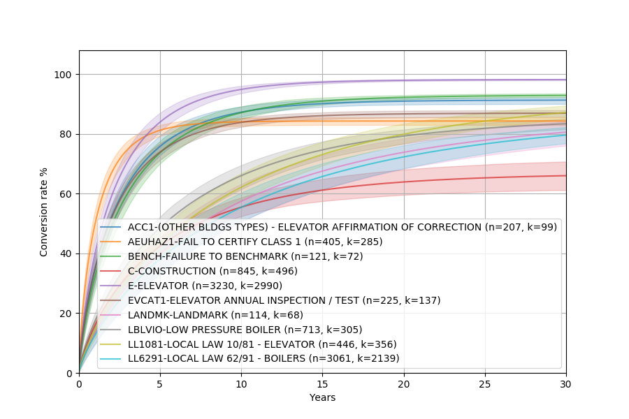
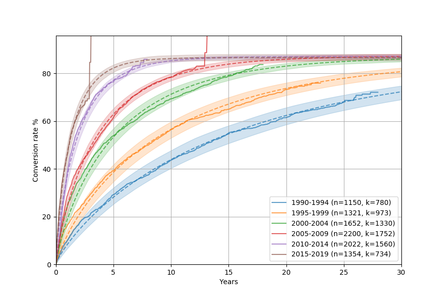
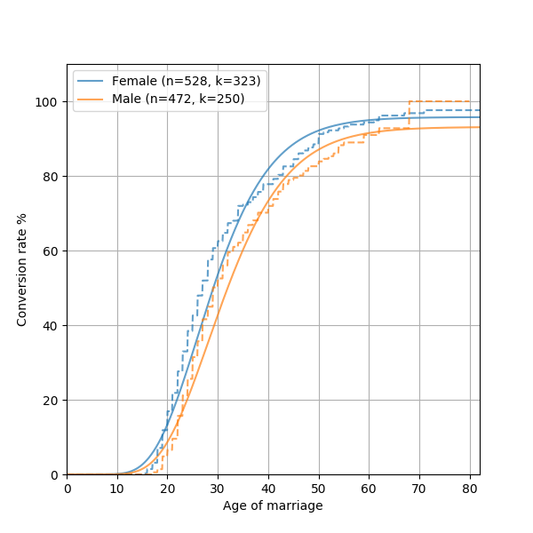
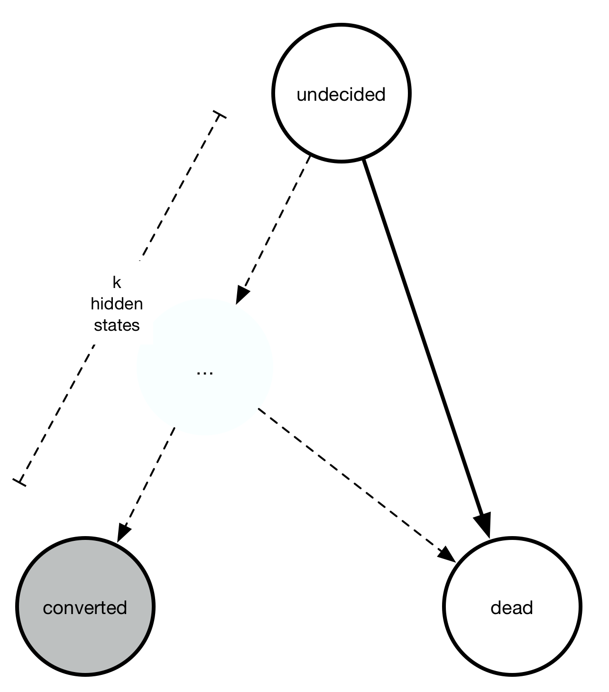

Convoys¶
Convoys is a simple library that fits a few statistical model useful for modeling time-lagged conversion rates. You can check out the Github repo for source code and more things!
Installation¶
The easiest way to install is from PyPI:
pip install convoys
Background¶
Predicting conversions is a really important problem for ecommerce, online advertising, and many other applications. In many cases when conversions are relatively quick, you can measure the response (e.g. whether the user bought the product) and use models like logistic regression to predict conversion.
If conversions have substantial time lag (which is often the case) it gets a bit trickier. You know who converted, but if someone did not convert, they might still convert in the future. In other words, conversions are observed, but non-conversions are not observed.
The “hacky” way to address this is to define conversion as conversion at time X. This turns the problem into a simple binary classification problem, but the drawback is you are losing data by binarizing it. First of all, you can not learn from users that are younger than X. You also can not learn from users that convert after X. For an excellent introduction to this problem (and distributions like the Weibull distribution), here’s a blog post about implementing a recurrent neural network to predict churn.
Survival analysis saves the day¶
Luckily, there is a somewhat similar field called survival analysis. It introduces the concept of censored data, which is data that we have not observed yet. Lifelines is a great Python package with excellent documentation that implements many classic models for survival analysis.
Unfortunately, fitting a distribution such as Weibull is not enough in the case of conversion rates, since not everyone converts in the end. Typically conversion rates stabilize at some fraction eventually. For that reason, we have to make the model a bit more complex and introduce the possibility that some items may never convert.
Predicting lagged conversions¶
It turns out we can model conversions by essentially thinking of conversions as a logistic regression model multiplied by a distribution over time which is usually a Weibull distribution or something similar. Convoys implements a few of these models with some utility functions for data conversion and plotting.
Examples¶
The main use case for something like Convoys is definitely for online advertising, ecommerce, or similar applications. However, there are several places these models can be useful, which we will illustrate with some very different types of datasets.
Example 1: NYC Department of Buildings violations¶
We are going to look at complaints received by the Department of Buildings in NYC. The dataset is available here.
First, lets load it. There is a pandas DataFrame in the examples/ directory that contains a subsampl of the full dataset (10,000 rows out of the 1.3M rows).
df = pandas.read_pickle('examples/dob_violations.pickle')
We are going to look at time delay from issue to disposition (when the case was finally resolved, or closed).
The next step is to convert it to numpy arrays so that we can work with it.
Convoys comes with a utility function convoys.utils.get_arrays() that handles the conversion for you.
Several of the arguments are references to columns in the dataframe, in this case type, issue_date, and disposition_date.
unit, groups, (G, B, T) = convoys.utils.get_arrays(
df, groups='type', created='issue_date', converted='disposition_date',
unit='years', group_min_size=100)
This will create three numpy arrays that we can use to plot.
Let’s start with a nonparametric Kaplan-Meier estimator and plot it using the convoys.plotting.plot_cohorts() function.
convoys.plotting.plot_cohorts(G, B, T, model='kaplan-meier', ci=0.95, groups=groups)
pyplot.legend()
pyplot.show()
This should show something similar to this:
The fact that some complaints take 30 years to resolve is pretty baffling. I have no idea why it’s so bad!
Anyway, let’s fit a Weibull distribution.
This is a parametric model, meaning it will fit a mathematical model with a few unknowns by finding the values of those unknowns that optimizes the fit.
convoys.plotting.plot_cohorts(G, B, T, model='weibull', ci=0.95, groups=groups)
pyplot.legend()
pyplot.show()
This should show something similar to this:
As you can see, the Weibull distribution fits the nonparametric plot fairly well!
One of the benefits of parametric models is that you can extrapolate them to see the final conversion rate. Let’s try to fit the Weibull model to see how different cohorts of reported violations are cleared. Let’s also plot the Kaplan-Meier and the Weibull model on top of each other so that we can compare visually how well the model fits.
df['bucket'] = df['issue_date'].apply(lambda d: '%d-%d' % (5*(d.year//5), 5*(d.year//5)+4))
unit, groups, (G, B, T) = convoys.utils.get_arrays(
df, groups='bucket', created='issue_date', converted='disposition_date',
unit='years', group_min_size=500)
convoys.plotting.plot_cohorts(G, B, T, model='kaplan-meier', groups=groups, t_max=30)
convoys.plotting.plot_cohorts(G, B, T, model='weibull', groups=groups, t_max=30, plot_kwargs={'linestyle': '--'}, ci=0.95)
pyplot.legend()
pyplot.show()
This will show something like this:
The dashed lines are the Kaplan-Meier curves, whereas the solid ones with the shaded area are the Weibull model (with corresponding uncertainty intervals). They match really well!
It looks like disposition has gotten consistently faster over the years, which is good to see. The weird vertical jumps in Kaplan-Meier is just an artifact of how the model is fit, where the last observation ends up being drawn in a funny way.
Example 2: Age of marriage¶
This example looks at time until marriage. Since not everyone marries, it’s a great example where survival analysis would not be correct (although most people marry, so the difference isn’t that huge).
There’s a dataset in the repo that contains year born, year married, and a number of attributes for a random sample of a few hundred thousand Americans. The data is included as a Pandas dataframe.
Let’s fit a generalized Gamma distribution!
Why that distribution?
Unlike the previous example, we expect some kind of time lag before the first conversion even start to happen.
A Gamma distribution is a sum of k exponentials, which can be interpreted as various life phases a person goes through (newborn, toddler, etc).
A generalized Gamma distribution adds another paramter p which makes each exponential into a Weibull. This just gives one more degree of freedom to fit the model.
df = pandas.read_pickle('examples/marriage.pickle')
_, groups, (G, B, T) = convoys.utils.get_arrays(
df, groups='sex', created='born', converted='married')
pyplot.figure(figsize=(12, 9))
convoys.plotting.plot_cohorts(G, B, T, model='generalized-gamma', groups=groups)
pyplot.legend()
convoys.plotting.plot_cohorts(G, B, T, model='kaplan-meier', groups=groups, plot_kwargs={'linestyle': '--'})
pyplot.savefig('marriage-combined.png')
This will generate something like this:
As you can see, marriage data does not quite follow a generalized Gamma distribution. This is not quite shocking, since many complex real world phenomenon are not always possible to model mathematically. One reason the model isn’t perfect is there’s an inherent bias in the dataset we use, where it only includes people who are still alive. Some resources suggest fitting a “Coale-McNeil” model to this instead, which seems like an interesting future addition to Convoys.
Motivation¶
A perfectly valid question is: Convoys really only implements one model: a generalized Gamma distribution multiplied by basically logistic regression. That seems like a very specialized distribution. In order to justify this choice, let’s first look at a handful of conversion charts from real data at Better:

The legend, labels of the axes, and title are all removed so that no business secrets are revealed. The solid lines with shaded area are all the generalized Gamma fits, whereas the dashed lines are the Kaplan-Meier fits. Note that the fit is very good! In fact, we have observed that almost any conversion metric can be modeled reasonably well with the generalized Gamma model (multiplied by logistic regression).
Empirically, this model seems to hold up pretty well.
Some more mathematical justification¶
A simple toy problem also demonstrates why we would expect to get a time-dependent distribution (like the Exponential distribution) multiplied by a logistic function. Consider the continuous-time Markov chain with three states: undecided, converted, or died.

Everyone starts out “undecided” but either converts or dies with rates \(\lambda_{\text{convert}}\) and \(\lambda_{\text{die}}\). However, we only observe the conversions, not the deaths. At any point in time, we have \(P_{\text{undecided}}(t) + P_{\text{converted}}(t) + P_{\text{dead}}(t) = 1\).
The rate of going to undecided to any of the other two states is a constant, meaning at any time interval some fixed proportion of the “undecided” state goes away. Writing out the equations we get an ordinary differential equation:
You can verify that the solution to these equations is the following:
As you can see, the solution is the product of two things
The \(1 - \exp(-(\lambda_{\text{convert}} + \lambda_{\text{die}})t)\) part describes the cumulative density function of an exponential distribution.
A constant factor \(\lambda_{\text{convert}}/(\lambda_{\text{convert}} + \lambda_{\text{die}})\) describes the final conversion \(P_{\text{converted}}(t \rightarrow \infty)\).
Turning it into a regression problem¶
Note that \(\lambda_{\text{convert}}\) and \(\lambda_{\text{die}}\) are positive numbers. For each observation \(z\), let’s set \(\lambda_{\text{convert}} = \exp(a^Tz)\) and \(\lambda_{\text{die}} = \exp(b^Tz)\) where \(a, b\) are two unknown vectors.
With this transformation, the probability of conversion becomes
This is the sigmoid function. If you set \(\beta = a - b\) then it turns into ordinary logistic regression where \(\beta\) is the unknown feature weights that we are trying to learn. This shows that the regression method in convoys turns into logistic regression in the limit where \(t \rightarrow \infty\).
Weibull, gamma, and generalized gamma distributions¶
Moving on from exponential distributions, there are some good reasons we would want a bit more flexibility with the conversion rates. The Weibull distribution adds one single parameter and is widely used in time-to-event analysis. Empirically, the Weibull model seems to fit a large range of applications, where the common pattern is that conversions start immediately at \(t=0\).
Another class of processes model the behavior where there might be some internal states between “undecided” and “converted” that causes conversions not to start immediately. The sum of multiple exponential distributions is a gamma distribution. It also requires one more parameter than the exponential distribution.
Finally, the generalized gamma distribution unifies the Weibull and the gamma distribution, and requires two more parameters than the exponential distribution. The relationship between all four distributions can be summarized in this chart:

Model¶
Convoys tries to optimize the maximum a posteriori likelihood of observing all the data given the model, optionally also using Markov chain Monte Carlo to sample from the posterior in order to generate uncertainty estimate.
Let’s say \(f(t, x)\) is a probability density function over time of when a conversion happen, where \(t > 0\) and \(x\) is some feature vector. Note that \(f(t, x)\) denote the probability density of conversion conditional on the conversion happening. This means that \(\int_0^\infty f(t, x) dt = 1\).
We use \(F(t, x)\) to denote the cumulative density function of \(f(t, x)\). The definitions of \(f, F\) depends on which model we use, so we can plug in a Weibull distribution or a Gamma distribution or something else.
We now introduce \(g(t, x) = c(x)f(t, x)\) and \(G(t, x) = c(x)F(t, x)\) where \(c(x)\) denotes the probability of conversion at all. This means that \(\lim_{t \rightarrow \infty} G(t, x) = c(x)\).
For each data point, we have three different cases:
We observed conversion. In that case, the probability density is \(g(t, x)\)
We didn’t observe conversion yet and the current time is \(t\). There are two sub-cases
No conversion will ever happen. The probability density is \(1 - c(x)\).
Conversion will happen at some point in the future. The probability is \(c(x)(1 - F(x, t))\).
Multiplying all these probabilities and taking the logarithm gives the total log-likelihood of the data given the model. See documentation for GeneralizedGamma for some more information about the exact math. There is also some regularization that wasn’t covered here.
Full API documentation¶
- convoys.plotting.plot_cohorts(G: numpy.ndarray, B: numpy.ndarray, T: numpy.ndarray, t_max: int | float | None = None, model: Literal['kaplan-meier', 'exponential', 'weibull', 'gamma', 'generalized-gamma'] | convoys.multi.MultiModel = 'kaplan-meier', ci: float | None = None, ax: 'Axes' | None = None, plot_kwargs: dict[str, Any] | None = None, plot_ci_kwargs: dict[str, Any] | None = None, groups: list[Hashable] | None = None, specific_groups: list[Hashable] | None = None, label_fmt: str = '%(group)s (n=%(n).0f, k=%(k).0f)') convoys.multi.MultiModel[source]¶
Helper function to fit data using a model and then plot the cohorts.
- Parameters:
G – list with group assignment
B – list with group assignment
T – list with group assignment
t_max – (optional) max value for x axis
model – (optional, default is kaplan-meier) model to fit. Can be an instance of
multi.MultiModelor a string identifying the model. One of ‘kaplan-meier’, ‘exponential’, ‘weibull’, ‘gamma’, or ‘generalized-gamma’.ci – confidence interval, value from 0-1, or None (default) if no confidence interval is to be plotted
ax – custom pyplot axis to plot on
plot_kwargs – extra arguments to pyplot for the lines
plot_ci_kwargs – extra arguments to pyplot for the confidence intervals
groups – list of group labels
specific_groups – subset of groups to plot
label_fmt – custom format for the labels to use in the legend
See
convoys.utils.get_arrays()which is handy for converting a Pandas dataframe into arrays G, B, T.
- class convoys.regression.Exponential(*args: Any, **kwargs: Any)[source]¶
Specialization of
GeneralizedGammawhere \(k=1, p=1\).The cumulative density function is:
\(F(t) = 1 - \exp(-t\lambda)\)
The probability density function is:
\(f(t) = \lambda\exp(-t\lambda)\)
The exponential distribution is the most simple distribution. From a conversion perspective, you can interpret it as having two competing final states where the probability of transitioning from the initial state to converted or dead is constant.
See documentation for
GeneralizedGamma.- fit(X: ArrayLike, B: ArrayLike, T: ArrayLike, W: 'ArrayLike' | None = None) None¶
Fits the model.
- Parameters:
X – numpy matrix of shape \(k \cdot n\)
B – numpy vector of shape \(n\)
T – numpy vector of shape \(n\)
W – (optional) numpy vector of shape \(n\)
- predict(x: ArrayLike, t: ArrayLike) numpy.ndarray¶
Returns the value of the cumulative distribution function for a fitted model (using the maximum a posteriori estimate).
- Parameters:
x – feature vector (or matrix)
t – time
- predict_ci(x: ArrayLike, t: ArrayLike, ci: float = 0.8) numpy.ndarray¶
Works like
predict()but produces a confidence interval.Requires the model to be fit with ci = True. The return value will contain one more dimension than for
predict(), and the last dimension will have size 3, containing the mean, the lower bound of the confidence interval, and the upper bound of the confidence interval.
- predict_posteriori(x: ArrayLike, t: ArrayLike) numpy.ndarray¶
Returns the trace samples generated via the MCMC steps.
Requires the model to be fit with mcmc == True.
- rvs(x: ArrayLike, n_curves: int = 1, n_samples: int = 1, T: numpy.ndarray | None = None) tuple[numpy.ndarray, numpy.ndarray]¶
Samples values from this distribution
T is optional and means we already observed non-conversion until T
- class convoys.regression.Gamma(*args: Any, **kwargs: Any)[source]¶
Specialization of
GeneralizedGammawhere \(p=1\).The cumulative density function is:
\(F(t) = P(k, t\lambda)\)
where \(P(a, x) = \gamma(a, x) / \Gamma(a)\) is the lower regularized incomplete gamma function.
The probability density function is:
\(f(t) = \lambda^k t^{k-1} \exp(-x\lambda) / \Gamma(k)\)
See documentation for
GeneralizedGamma.- fit(X: ArrayLike, B: ArrayLike, T: ArrayLike, W: 'ArrayLike' | None = None) None¶
Fits the model.
- Parameters:
X – numpy matrix of shape \(k \cdot n\)
B – numpy vector of shape \(n\)
T – numpy vector of shape \(n\)
W – (optional) numpy vector of shape \(n\)
- predict(x: ArrayLike, t: ArrayLike) numpy.ndarray¶
Returns the value of the cumulative distribution function for a fitted model (using the maximum a posteriori estimate).
- Parameters:
x – feature vector (or matrix)
t – time
- predict_ci(x: ArrayLike, t: ArrayLike, ci: float = 0.8) numpy.ndarray¶
Works like
predict()but produces a confidence interval.Requires the model to be fit with ci = True. The return value will contain one more dimension than for
predict(), and the last dimension will have size 3, containing the mean, the lower bound of the confidence interval, and the upper bound of the confidence interval.
- predict_posteriori(x: ArrayLike, t: ArrayLike) numpy.ndarray¶
Returns the trace samples generated via the MCMC steps.
Requires the model to be fit with mcmc == True.
- rvs(x: ArrayLike, n_curves: int = 1, n_samples: int = 1, T: numpy.ndarray | None = None) tuple[numpy.ndarray, numpy.ndarray]¶
Samples values from this distribution
T is optional and means we already observed non-conversion until T
- class convoys.regression.GeneralizedGamma(mcmc: bool = False, fix_k: int | None = None, fix_p: int | None = None, hierarchical: bool = True, flavor: Literal['logistic', 'linear'] = 'logistic')[source]¶
Generalization of Gamma, Weibull, and Exponential
- Parameters:
mcmc – boolean, defaults to False. Whether to use MCMC to sample from the posterior so that a confidence interval can be estimated later (see
predict()).hierarchical – boolean denoting whether we have a (Normal) prior on the alpha and beta parameters to regularize. The variance of the normal distribution is in itself assumed to be an inverse gamma distribution (1, 1).
flavor – defaults to logistic. If set to ‘linear’, then an linear model is fit, where the beta params will be completely additive. This creates a much more interpretable model, with some minor loss of accuracy.
This mostly follows the Wikipedia article, although our notation is slightly different. Also see this paper for an overview.
Shape of the probability function
The cumulative density function is:
\(F(t) = P(k, (t\lambda)^p)\)
where \(P(a, x) = \gamma(a, x) / \Gamma(a)\) is the lower regularized incomplete gamma function. \(\gamma(a, x)\) is the incomplete gamma function and \(\Gamma(a)\) is the standard gamma function.
The probability density function is:
\(f(t) = p\lambda^{kp} t^{kp-1} \exp(-(t\lambda)^p) / \Gamma(k)\)
Modeling conversion rate
Since our goal is to model the conversion rate, we assume the conversion rate converges to a final value
\(c = \sigma(\mathbf{\beta^Tx} + b)\)
where \(\sigma(z) = 1/(1+e^{-z})\) is the sigmoid function, \(\mathbf{\beta}\) is an unknown vector we are solving for (with corresponding intercept \(b\)), and \(\mathbf{x}\) are the feature vector (inputs).
We also assume that the rate parameter \(\lambda\) is determined by
\(\lambda = exp(\mathbf{\alpha^Tx} + a)\)
where \(\mathrm{\alpha}\) is another unknown vector we are trying to solve for (with corresponding intercept \(a\)).
We also assume that the \(\mathbf{\alpha}, \mathbf{\beta}\) vectors have a normal distribution
\(\alpha_i \sim \mathcal{N}(0, \sigma_{\alpha})\), \(\beta_i \sim \mathcal{N}(0, \sigma_{\beta})\)
where hyperparameters \(\sigma_{\alpha}^2, \sigma_{\beta}^2\) are drawn from an inverse gamma distribution
\(\sigma_{\alpha}^2 \sim \text{inv-gamma}(1, 1)\), \(\sigma_{\beta}^2 \sim \text{inv-gamma}(1, 1)\)
List of parameters
The full model fits vectors \(\mathbf{\alpha, \beta}\) and scalars \(a, b, k, p, \sigma_{\alpha}, \sigma_{\beta}\).
Likelihood and censorship
For entries that convert, the contribution to the likelihood is simply the probability density given by the probability distribution function \(f(t)\) times the final conversion rate \(c\).
For entries that did not convert, there is two options. Either the entry will never convert, which has probability \(1-c\). Or, it will convert at some later point that we have not observed yet, with probability given by the cumulative density function \(F(t)\).
Solving the optimization problem
To find the MAP (max a posteriori), scipy.optimize.minimize with the SLSQP method.
If mcmc == True, then emcee is used to sample from the full posterior in order to generate uncertainty estimates for all parameters.
- fit(X: ArrayLike, B: ArrayLike, T: ArrayLike, W: 'ArrayLike' | None = None) None[source]¶
Fits the model.
- Parameters:
X – numpy matrix of shape \(k \cdot n\)
B – numpy vector of shape \(n\)
T – numpy vector of shape \(n\)
W – (optional) numpy vector of shape \(n\)
- predict(x: ArrayLike, t: ArrayLike) numpy.ndarray[source]¶
Returns the value of the cumulative distribution function for a fitted model (using the maximum a posteriori estimate).
- Parameters:
x – feature vector (or matrix)
t – time
- predict_ci(x: ArrayLike, t: ArrayLike, ci: float = 0.8) numpy.ndarray[source]¶
Works like
predict()but produces a confidence interval.Requires the model to be fit with ci = True. The return value will contain one more dimension than for
predict(), and the last dimension will have size 3, containing the mean, the lower bound of the confidence interval, and the upper bound of the confidence interval.
- class convoys.regression.Weibull(*args: Any, **kwargs: Any)[source]¶
Specialization of
GeneralizedGammawhere \(k=1\).The cumulative density function is:
\(F(t) = 1 - \exp(-(t\lambda)^p)\)
The probability density function is:
\(f(t) = p\lambda(t\lambda)^{p-1}\exp(-(t\lambda)^p)\)
See documentation for
GeneralizedGamma.- fit(X: ArrayLike, B: ArrayLike, T: ArrayLike, W: 'ArrayLike' | None = None) None¶
Fits the model.
- Parameters:
X – numpy matrix of shape \(k \cdot n\)
B – numpy vector of shape \(n\)
T – numpy vector of shape \(n\)
W – (optional) numpy vector of shape \(n\)
- predict(x: ArrayLike, t: ArrayLike) numpy.ndarray¶
Returns the value of the cumulative distribution function for a fitted model (using the maximum a posteriori estimate).
- Parameters:
x – feature vector (or matrix)
t – time
- predict_ci(x: ArrayLike, t: ArrayLike, ci: float = 0.8) numpy.ndarray¶
Works like
predict()but produces a confidence interval.Requires the model to be fit with ci = True. The return value will contain one more dimension than for
predict(), and the last dimension will have size 3, containing the mean, the lower bound of the confidence interval, and the upper bound of the confidence interval.
- predict_posteriori(x: ArrayLike, t: ArrayLike) numpy.ndarray¶
Returns the trace samples generated via the MCMC steps.
Requires the model to be fit with mcmc == True.
- rvs(x: ArrayLike, n_curves: int = 1, n_samples: int = 1, T: numpy.ndarray | None = None) tuple[numpy.ndarray, numpy.ndarray]¶
Samples values from this distribution
T is optional and means we already observed non-conversion until T
- class convoys.single.KaplanMeier[source]¶
Implementation of the Kaplan-Meier nonparametric method.
- class convoys.multi.Exponential(*args: Any, **kwargs: Any)[source]¶
Multi-group version of
convoys.regression.Exponential.- fit(G: ArrayLike, B: ArrayLike, T: ArrayLike) None¶
Fits the model
- Parameters:
G – numpy vector of shape \(n\)
B – numpy vector of shape \(n\)
T – numpy vector of shape \(n\)
- class convoys.multi.Gamma(*args: Any, **kwargs: Any)[source]¶
Multi-group version of
convoys.regression.Gamma.- fit(G: ArrayLike, B: ArrayLike, T: ArrayLike) None¶
Fits the model
- Parameters:
G – numpy vector of shape \(n\)
B – numpy vector of shape \(n\)
T – numpy vector of shape \(n\)
- class convoys.multi.GeneralizedGamma(*args: Any, **kwargs: Any)[source]¶
Multi-group version of
convoys.regression.GeneralizedGamma.- fit(G: ArrayLike, B: ArrayLike, T: ArrayLike) None¶
Fits the model
- Parameters:
G – numpy vector of shape \(n\)
B – numpy vector of shape \(n\)
T – numpy vector of shape \(n\)
- class convoys.multi.KaplanMeier(*args: Any, **kwargs: Any)[source]¶
Multi-group version of
convoys.single.KaplanMeier.- fit(G: ArrayLike, B: ArrayLike, T: ArrayLike) None¶
Fits the model
- Parameters:
G – numpy vector of shape \(n\)
B – numpy vector of shape \(n\)
T – numpy vector of shape \(n\)
- class convoys.multi.Weibull(*args: Any, **kwargs: Any)[source]¶
Multi-group version of
convoys.regression.Weibull.- fit(G: ArrayLike, B: ArrayLike, T: ArrayLike) None¶
Fits the model
- Parameters:
G – numpy vector of shape \(n\)
B – numpy vector of shape \(n\)
T – numpy vector of shape \(n\)
- convoys.utils.get_arrays(data: pandas.DataFrame, features: str | Sequence[str] | None = None, groups: str | None = None, created: str | None = None, converted: str | None = None, now: str | None = None, unit: 'Unit' | None = None, group_min_size: int = 0, max_groups: int = -1) tuple['Unit' | None, list[Hashable] | None, tuple[numpy.ndarray, numpy.ndarray, numpy.ndarray]][source]¶
Converts a dataframe to a list of numpy arrays.
Generates either feature data, or group data.
- Parameters:
data – Pandas dataframe
features – string (optional), refers to a column in the dataframe containing features, each being a 1d-vector or list of features. If not provided, then it it will look for a column in the dataframe named “features”. This argument can also be a list of columns.
groups – string (optional), refers to a column in the dataframe containing the groups for each row. If not provided, then it will look for a column in the dataframe named “groups”.
created – string (optional), refers to a column in the dataframe containing timestamps of when each item was “created”. If not provided, then it will look for a column in the dataframe named “created”.
converted – string, refers to a column in the dataframe containing timestamps of when each item converted. If there is no column containing creation values, then the converted values should be timedeltas denoting time until conversion. If this argument is not provided, then it will look for a column in the dataframe named “created”.
now – string (optional), refers to a column in the dataframe containing the point in time up until which we have observed non-conversion. If there is no column containing creation value, then these values should be timedeltas. If this argument is not provided, the current timestamp will be used.
unit – string (optional), time unit to use when converting to numerical values. Has to be one of “years”, “days”, “hours”, “minutes”, or “seconds”. If not provided, then a choice will be made based on the largest time interval in the inputs.
group_min_size – integer (optional), only include groups that has at least this many observations
max_groups – integer (optional), only include the n largest groups
- Returns:
tuple (unit, groups, arrays)
unit is the unit chosen. Will be one of “years”, “days”, “hours”, “minutes”, or “seconds”. If the unit parameter is passed, this will be the same.
- groups is a list of strings containing the groups. Will be None
if groups is not set.
arrays is a tuple of numpy arrays (G, B, T) or (X, B, T) containing the transformed input in numerical format. G, B, T will all be 1D numpy arrays. X will be a 2D numpy array.
Future work¶
Add support for a competing hazard model. This would make it possible to analyze a dataset where there’s multiple final outcomes.
Add support for left-censoring. This would make it possible to analyze some great datasets such as Washington Posts unsolved homicide dataset where we don’t know when a murder was dispositioned.
Add support for multi-stage processes where there’s a number of “milestones” that depend on each other.
Add support for some kind of recurrent neural network or similar where the features can vary over time.
License¶
Convoys uses the MIT license.

{kind=link}